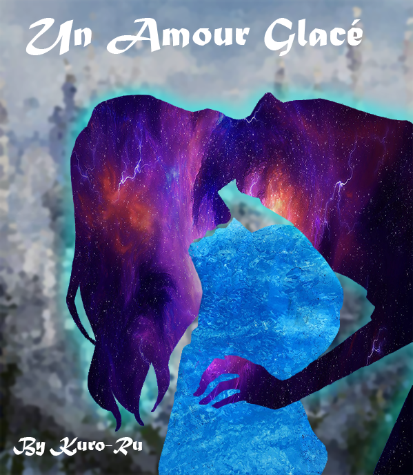
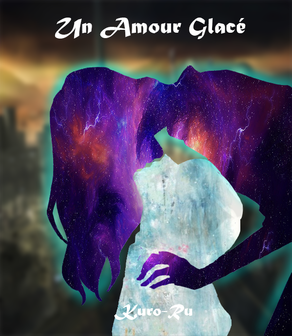

L'écriture
J'ai toujours eu une imagination débordante et pour rendre concrète cette imagination, j'ai fais le choix d'écrire les histoires qui me sont passé par la tête et surtout une. Au début, c'était surtout un passe-temps mais c'est vite devenu une passion. Je me suis plus particulièrement attaché à une histoire que j'ai décidé de publier sur une dont je ne donnerai pas le nom ! (ce n'est pas encore assez concret pour) Et aujourd'hui, cette histoire comptabilise une soixantaine de chapitres, ce qui est assez conséquent. Très rapidement le besoin d'avoir une couverture a part entière s'est fait ressentir, j'ai alors décidé d'en créer une qui respecterai certains critères, ce qui n'a pas été très facile. Il fallait caractériser le nom avec le titre sans pour autant trop en dévoiler.

Choix visuel
J'ai fais des recherches sur les différentes couvertures de livre existante sans réellement trouver la méthode qui me permettrait de faire une bonne couverture. J'ai donc choisi laisser aller mon imagination et choisi la meilleure façon de représenter les deux personnages principaux de l'histoire et finalement j'en suis arriver au résultat ci-dessus. Deux couleurs représentant chacune le caractère de chacun des personnage. Une couleure et texture froide ainsi qu'une autre avec un mélange de chaud et de froid.